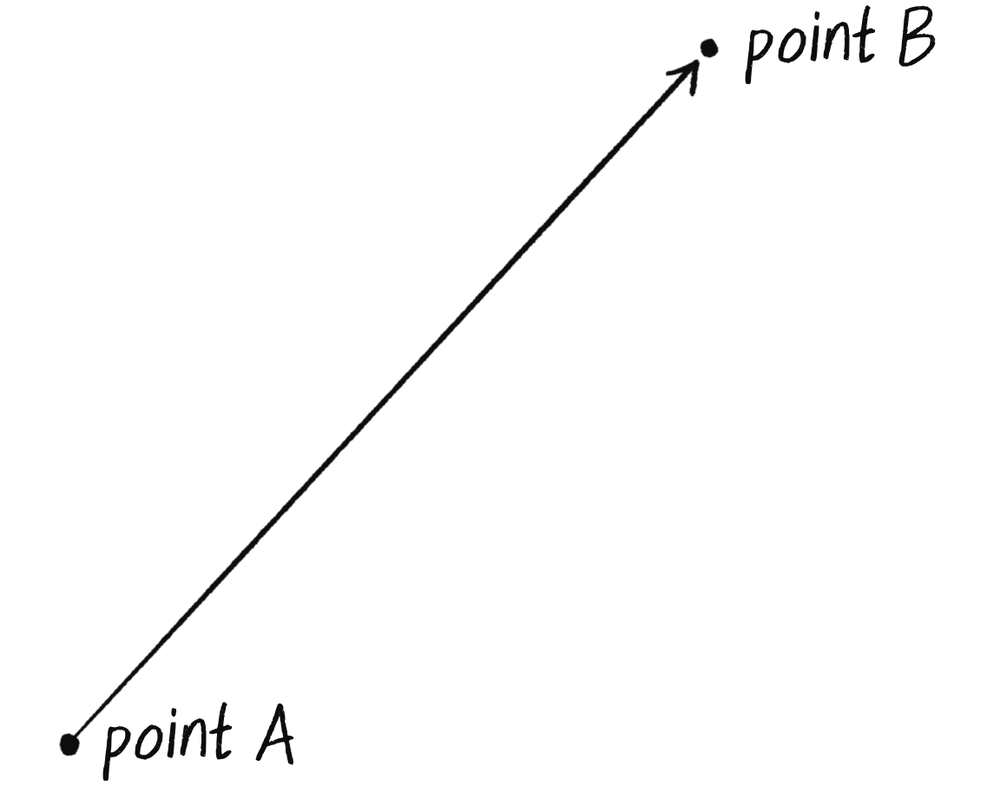
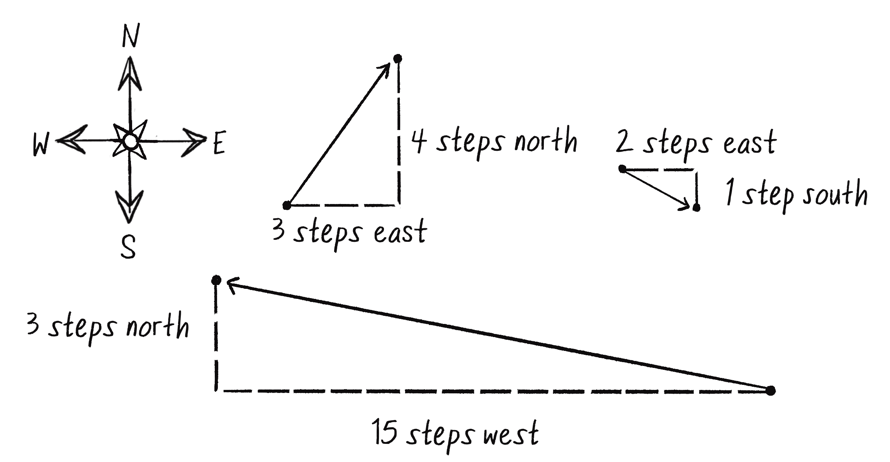
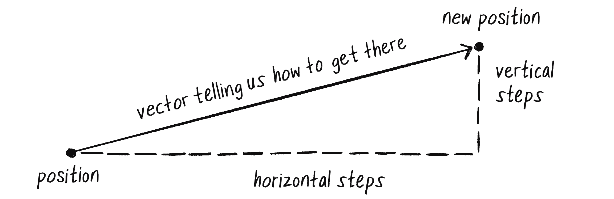
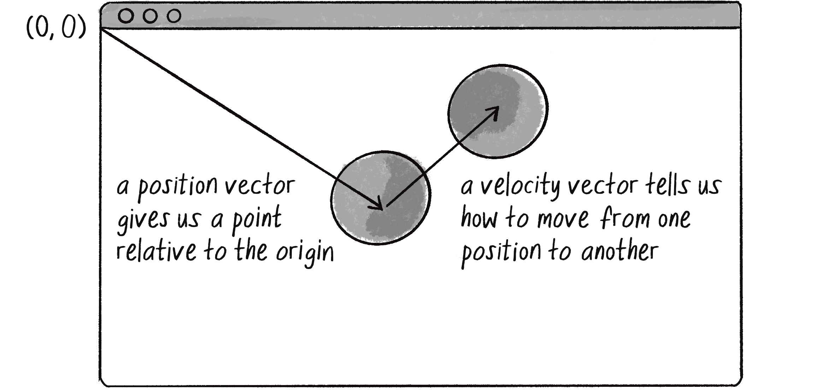

Vektör Kavramı (Vector)
Programlamada hareket oluşturmak istediğinizde, "bir nesne nasıl hareket eder?" sorusunu cevaplamamız gerekir. Cevap: konum değişir. Peki konum nasıl değişir? İşte burada vektörler devreye girer.

💡 Euclidean Vector
Matematikçiler buna "Euclidean vector" veya "geometric vector" der. Programlamada genellikle sadece "vector" diyoruz.
Skaler vs Vektör (Scalar vs Vector)
İki tür değer vardır: skaler ve vektör.
Örnekler: sıcaklık (25°C), kütle (70 kg), hız değeri (100 km/s)
Örnekler: hız (kuzeye 100 km/s), kuvvet (sağa 50 N), konum (3, 4)

| Özellik | Skaler | Vektör |
|---|---|---|
| Büyüklük | ✅ Var | ✅ Var |
| Yön | ❌ Yok | ✅ Var |
| Gösterim | Tek sayı: 5 | Çoklu sayı: (3, 4) |
| Örnek | Sıcaklık, kütle | Konum, hız, kuvvet |
Neden Vektör Kullanmalıyız? (Why Vectors?)
Vektör kullanmadan da hareket programlayabilirsiniz. Ama kod çabucak karmaşıklaşır:
// ❌ VEKTÖRSÜZ (eski yöntem)
let x = 100;
let y = 100;
let xSpeed = 2;
let ySpeed = 3;
function draw() {
x += xSpeed; // x konumunu güncelle
y += ySpeed; // y konumunu güncelle
circle(x, y, 20);
}
// Birden fazla nesne için? 😱
let x1, y1, xSpeed1, ySpeed1;
let x2, y2, xSpeed2, ySpeed2;
let x3, y3, xSpeed3, ySpeed3;
// ... korkunç!// ✅ VEKTÖRLE (modern yöntem)
let position;
let velocity;
function setup() {
position = createVector(100, 100);
velocity = createVector(2, 3);
}
function draw() {
position.add(velocity); // Tek satır!
circle(position.x, position.y, 20);
}
// Birden fazla nesne için? 😊
let mover1 = { pos: createVector(...), vel: createVector(...) };
let mover2 = { pos: createVector(...), vel: createVector(...) };
// ... temiz!🎮 Avantajlar
- Daha az değişken: x ve y yerine tek position vektörü
- Daha okunur: position.add(velocity) ne yaptığı açık
- Daha güçlü: Vektör matematiği (toplama, çıkarma, döndürme...)
- 3D'ye geçiş kolay: (x, y) → (x, y, z)
Vektörler Nerelerde Kullanılır?


İlk Örnek: Zıplayan Top
Henüz p5.Vector kullanmadan, klasik x/y değişkenleriyle bir top zıplatalım. Sonraki bölümde bunu vektörlerle yeniden yazacağız.
Satır Satır Açıklama:
position.add(velocity)
📝 Bu Bölümün Özeti
- Vektör: Büyüklük + Yön içeren bir değer
- Skaler: Sadece büyüklük içeren bir değer
- Konum, hız, ivme, kuvvet: Hepsi vektördür
- Neden vektör: Daha az değişken, daha temiz kod
- 2D'de: Vektör = (x, y)
- 3D'de: Vektör = (x, y, z)